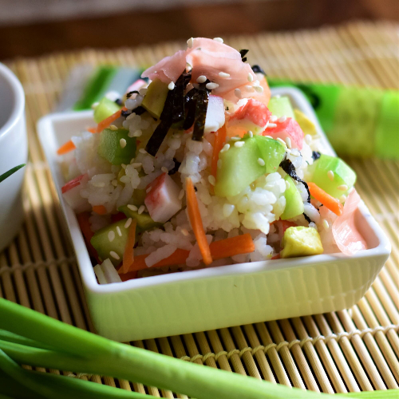

Sushi Salad

Description
This california roll imitation is a lovely meal.
The salad allows you to get the tase of a sushi roll withou the hassle.
This recipe could be altered to reflect your favorite style of sushi.
Easy to make and very flavorful!
Ingredients
- 1.5 cups sushi rice, or Japanese short-grain white rice
- 2 cups water
- 1/2 cup rice wine vinger
- 1/4 cup sugar
- 1/8 cup sake
- 12 ounces imitation crabmeat, flaked
- 1 cup seeded and chopped cucumber
- 1 avocado, chopped
- 1 tablespoon soy sauce, or to taste
Steps
- Rinse rice in a strainer under cold water until water runs clear. Transfer rice to a medium saucepan, add 3 cups water,
and bring to a boil. Reduce heat to low, cover, and cook under rice is tender and water is absorbed, about 20 minutes.
- Meanwhile, combine rice wine vinegar, sugar, and sake in a microwave-safe bowl.
Microwave on high until sugar is completely dissolved, about 1 minute.
- Place cooked rice in a large bowl. Stir in vinegar mixture until well combined and let sit for 2 minutes.
Stir again. Add imitation crabmeat, cucumber, and chopped avocado; mix well. Use soy sauce to season individual portions.